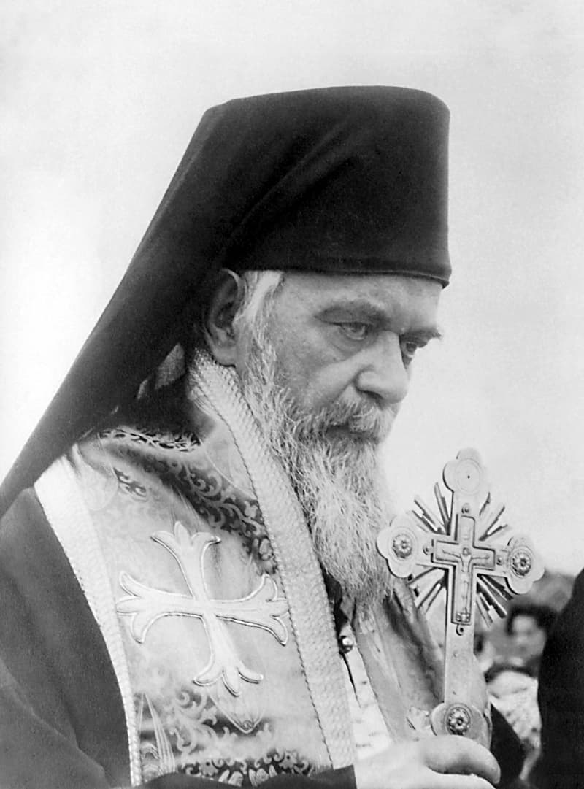
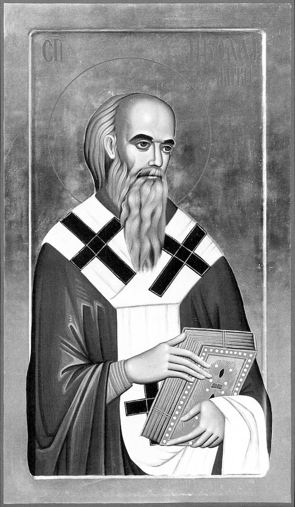

În inima omului totul se poate cuprinde, dar numai Tu, Dumnezeul nostru, o poți cuprinde. Și curăția îngerilor și necurăția iadului își poate găsi locul în inima omului. Barometrul inimii omului are însemnate toate gradațiile, de la talpa iadului până în tăria cerurilor.
Cea dintâi săptămână
„Fiule, dă-mi inima ta!, zis-a Domnul” /Pilde 23:26/
1. Mai presus de toate gândește-te la Dumnezeu, căci și Dumnezeu se gândește la tine mai presus de toate. Precum păstorul se gândește la oaia cea rătăcită mai mult decât la întreaga turmă, așa și Dumnezeul tău se gândește la tine, care te pierzi în păcat, mai mult decât la toți îngerii din ceruri.
2. A cugeta la Dumnezeu nu înseamnă a cerceta ființa lui Dumnezeu, ci înseamnă a cerceta și a afla ce așteaptă Dumnezeu de la om.
3. Cel ce cumpără nuci nu caută la coajă, ci la miez. La fel și cel ce cumpără ouă. Și așijderea cu nenumărate lucruri din lume, oamenii le caută pe cele nevăzute și nu pe cele văzute. Și Dumnezeul tău caută la tine după inimă. Prin coaja cea trupească, El privește în miezul tău, în inima ta, și caută la inima ta. Fiul meu, dă-I inima ta!
4. În inimă, Ziditorul a pus temelia vieții. În inimă viața se zămislește, purcede, crește și se îndreaptă spre mormânt și dincolo de mormânt. Oare cât prețuiește omul despre care toți spun: e deștept, dar nu are inimă? Dumnezeu nu va cere de la el deșteptăciune, ci inimă. Căci s-a zis: „ce este nebun al lui Dumnezeu, mai înțelept decât oamenii este.” /I Cor. 1:25/
5. Sau cât prețuiește omul despre care se spune: e bogat, dar nu are inimă? Oare își va duce bogăția în cealaltă lume și o va dărui Celui a cărui vistierie sunt pământul și cerul, și soarele și stelele și toate împărățiile știute și neștiute?
6. Sau ce-i ajută omului puterea și frumusețea cea trupească? Oare nu întâlnim zilnic pe cei ce în tinereți erau puternici și frumoși, iar acum, gârboviți și trași, se sprijină ori în baston, ori de mâna cuiva? Multora, puterea și frumusețea trupească le-a slujit, din nefericire, la putrezirea inimii înainte de putrezirea pielii și oaselor.
7. Fericiți sunt cei ce din tinerețe nu s-au îndrăgostit de nici o frumusețe trecătoare și muritoare, ci de Ziditorul lor, a cărui putere nu slăbește și a cărui frumusețe nu piere! La dragostea lor, Dumnezeu va răspunde cu dragoste însutită, și inima lor Dumnezeu o va rândui lângă inima Sa.
8. Postul înseamnă slăbirea legăturii inimii cu lumea și întărirea legăturii inimii cu Dumnezeu. Amintește-ți și cugetă la aceasta în cea dintâi săptămână a Marelui Post.
9. Întărirea legăturii cu Dumnezeu aduce bucurie in inimă. De aceea se citește la începutul Postului din cărțile bisericești: „Iată, a venit veselitoarea vreme a postului!”
10. Amintește-ți numele acelor mărimi duhovnicești care, cu postul, au slăbit legăturile lor cu lumea și au întărit legăturile cu Dumnezeul cel Viu – Sfinții Antonie, Pavel, Efthimie, Avxentie, Avramie, Savva, Visarion, Vitalie, Gherasim, Chiriac, Zosima, Hariton, Efrem, Arsenie, Carion, Zaharia, Savva cel Sfințit, Simeon și Alipie Stâlpnicii, Onufrie, Pahomie, Petru și Athanasie Athoniții, și cei dimpreună cu dânșii.
11. Amintește-ți și de Dumnezeu purtătoarele fecioare și femei, a căror inimi au fost umplute de dragoste către Hristos – Sfintele Thecla, Xenia, Evpraxia, Anastasia, Matrona, Sara, Maria Eghipteanca, Pelaghia, Thaisia, Theodula, Vasilisa și cele dimpreună cu ele.
12. Dacă îți sunt departe după loc sau după vreme, atunci amintește-ți de acele slăvite nume din neamul tău – Sfânta Parascheva, Sfântul Sava, slava Serbiei, Sfinții Ioannichie de la Devici, Petru de la Korișa, Vasilie al Ostrogului, Prohor, Gavriil, Ioachim, Ioann al Rilei, Naum al Ohridei, Nectarie al Bitoliei și mulți, mulți alții care cu postul au sfințit trupurile lor și cu rugăciunea au sfințit țara în care viețuiești.
13. Ei toți același glas au auzit: „Fiule, dă-mi inima ta!” Acelui glas au răspuns și inima lor întru totul au dat-o Dumnezeului și Ziditorului lor.
A doua săptămână
„Mai înainte de toate cele ce se păzesc, păzește-ți inima, căci din ea izvorăște viața.” /Pilde 4:23/
1. Gospodarul își păzește de păsări țarina însămânțată, și de omizi livada și își păzește de fiare stâna, dar nimic altceva nu își păzește gospodarul precum casa de tâlhari, de foc, de ape, de fulgere, și de toată necurăția. Ce e casa pentru gospodărie, este inima pentru om. Pentru acesta s-a zis: „Mai înainte de toate cele ce se păzesc, păzește-ți inima.”
2. Din inimă izvorăște sânge, iar în sânge e sufletul. Precum e sufletul în inimă, așa e în tot omul. Dacă apa în izvor este sărată, este sărată și în râu; dacă e dulce în izvor, va fi dulce și în râu. Cum e izvorul, așa-i și vărsarea râului.
3. Dacă șarpele te mușcă de deget, otrava lui n-ar lucra, dacă sângele n-ar duce-o la inimă. Când doctorul pune pe deget un leac, leacul nu ar ajuta dacă sângele nu l-ar duce la inimă. La inimă ajunge și otrava, și leacul. Tot ce otrăvește viața și tot ce lecuiește viața trebuie să ajungă la inimă și să treacă prin inimă.
4. Acolo unde este centrul sistemului circulator sanguin trupesc, acolo este și centrul sistemului circulator duhovnicesc. Inima trupească este organ al inimii duhovnicești. Și chiar dacă asta este realitatea, totuși și această realitate e o mare taină.
5. Cu adevărat de nepătruns este această taină pentru mintea noastră, pentru că mintea este mai mică decât inima, iar inima cuprinde mintea, nu mintea inima. Partea nu înțelege întregul și nici cele mai de jos nu înțeleg cele înalte. Dumnezeu așa a vrut și așa a rânduit. Fericit este cel ce mai puțin cercetează tainele ființei lui Dumnezeu și mai mult ascultă de poruncile lui Dumnezeu și mai mult simte iubirea lui Dumnezeu în inima lui!
6. Sufletul este înveșmântat în porfira sângelui; iar când veșmântul este așa de simțitor, cu atât mai mult este ceea ce acoperă veșmântul! Precum un pai poate molipsi și strica sângele, așa și un singur cuvânt, o singură privire, un singur gând poate molipsi și strica sufletul.
7. De aceea, să asculți de doctorul omenesc când te învață: Îngrijește-te de sângele tău! Dar cu atât mai mult, să asculți de doctorul Dumnezeu, când îți poruncește: Mai înainte de toate cele ce se păzesc, păzește-ți inima, căci din ea izvorăște viața. Păzește-ți inima în inimă, miezul în coajă, flacăra în sânge, viața în veșmântul trupului. Mai înainte de toate cele ce se păzesc, păzește-ți inima, fiul meu – zice Domnul.
8. Când șarpele mușcă mâna, mâna se leagă cu un garou, ca sângele otrăvit din mână să nu se ducă în inimă și să strice izvorul sângelui. Când auzi un cuvânt rău, astupă-ți auzul, ca otrava cuvântului să nu coboare până la inima ta și să nu strice izvorul vieții tale, fiul meu!
9. Când vine bogăția, nu îți lipi inima de ea, spune Înțelepciunea în Cartea Vieții. Îngrădește-ți inima de bogăție cu un gard înalt până la ceruri, ca inima ta neîntinată și curată să se păzească pentru Cel ce o caută zicând: Fiule, dă-mi inima ta!
10. Mai stă scris în Cartea Vieții: Inima împăratului este în mâna lui Dumnezeu. Dacă împărățești asupra patimilor atunci ești un împărat adevărat. Atunci inima ta este în mâna lui Dumnezeu. Iar această mână conduce fără greșală inima ta și o îndreaptă spre împărăția luminii și a vieții veșnice.
11. Dacă în cea dintâi săptămână a Postului Mare ți-ai întărit convingerea că inima ta este a Dumnezeului și Tatălui tău; dacă te-ai hotărât cu tărie să i-o dai Lui, atunci în a doua săptămână învață să îți păzești inima. Deprinde-te cu lupta vitejească pentru neîntinarea și curăția inimii tale, pentru a putea întoarce acest dar Celui ce ți-a dăruit toate.
12. Luminează-ți inima cu credința, întărește-o cu nădejdea, încălzește-o cu dragostea, cădește-o cu rugăciunea, curăță-o cu lacrimile, hrănește-o cu Sângele Domnului și o înalță spre cer precum o candelă aprinsă. Numai așa vei putea aștepta cu pace trecerea din această lume pământească în lumea cerească, fără cutremurul păcătosului sau mustrarea conștiinței. De aceea, în această a doua săptămână a Postului Mare, înnoiește des sfatul Tatălui: Mai înainte de toate cele ce se păzesc, păzește-ți inima, căci din ea izvorăște viața.
A treia săptămână
„Fie ca inima ta să nu pizmuiască pre cei păcătoși, mai bine fii mereu în frica Domnului.” /Pilde 23:17/
1. Ești om botezat, adică curățit de necurăția dintru început și plivit de buruiana cea străveche. Necurăția cea dintru început și buruiana cea străveche au izvorât din păcatul cel dintru început și străvechi al strămoșilor. Oare prețuiești cum se cuvine mila și prea-marele dar ce ți s-a dat prin botez?
2. Dintr’o cocină murdară, botezul a făcut din tine Biserică. Așadar, ce invidie poți avea oare în inimă față de cei ce preschimbă iarăși o dumnezeiască Biserică în cocină murdară? Inima ta să nu invidieze pe cei păcătoși.
3. Sau dacă cuiva i se curăță, luminează, tămâiază și împodobește casa; și acesta, în loc să țină casa sa în acest fel de rânduială, ia lopata și aruncă peste uși și ferestre toată necurăția – îl vei invidia, oare, sau îl vei plânge?
4. Însuși Domnul Dumnezeu a curățit prin botez pe tot omul botezat. Frica ar trebui să te cuprindă în fața acestui gând, frica lui Dumnezeu, care a venit pentru a spăla, lumina, renaște și mântui pe oameni.
5. Precum curg lacrimile din pricina unei mari tristeți, dar și din pricina unei mari bucurii, așa și frica îl cuprinde pe om din pricina unei mari răutăți, dar și din pricina unei mari jertfe. Dumnezeu S-a arătat în Hristos ca o slugă pentru a curăți casa ta, pentru a preschimba cocina în Biserica din inima ta. Oare nu te cuprinde frica de atâta smerenie a Împăratului Împăraților? Și oare nu te cuprinde frica când vezi pe omul botezat când păcătuiește? Cu adevărat, nu este ceva mai nebunesc decât a invidia pe păcătos. Nebunie e și a-l invidia pe cel drept, mare nebunie – dar a-l invidia pe păcătos e cel mai nebunesc lucru.
6. Ce este păcătosul? Este un sinucigaș inconștient. Este un om ca orice om, care își dorește viața, însă neîncetat agonisește moarte întru sine. Sau: este un om care își dorește sănătate, dar neîncetat ia otravă. Oare îl vei invidia?
7. Dacă îl invidiezi pe păcătos, care aleargă după umbrele trecătoare ale acestei lumi, îi ești tovarăș în nebunie. El este nebun pentru că vrea să prindă ceea ce nu poate cuprinde, iar tu pentru că, cu invidia, îți otrăvești inima. Dacă îți pare rău pentru el și îl îndrepți, îi faci bine și ție și lui, îți întărești inima ta, iar pe a lui o vindeci.
8. O legendă pomenește de doi vecini bogați. Unul pătimea din pricina iubirii de arginți, iar celălalt din invidie pentru primul. Amândoi au murit în aceeași zi. Prietenii lor s-au sfădit care dintre cei doi era mai bun. Ca să sfârșească cearta, ei s-au hotărât să deschidă cele două trupuri și să scoată inimile celor doi – și după inimă să-i prețuiască. La cel iubitor de arginți au găsit o piatră în loc de inimă, iar la cel invidios au găsit un șarpe în loc de inimă. Șarpele a sărit și s-a ascuns sub acea piatră. O, fratele meu, inima ta să nu-i invidieze pe cei păcătoși! Invidia este un șarpe care se hrănește cu inima ta.
9. În această a treia săptămână a Postului Mare, lărgește-ți inima, ca să iasă toată invidia. Știi cum le grăiește Corintenilor preaînțeleptul Pavel: „Gura noastră s-a deschis către voi, Corintheni, inima noastră s-a lărgit”. /II Corinteni 6:11/ Unde este invidie, gura se strânge și nu vrea să grăiască aproapelui, iar inima se strânge, se contractă și se împuținează.
10. Gândește-te, oare cu câte mii s-ar împuțina răutățile din patria ta dacă ar pieri invidia dintre oameni? Și cât s-ar împuțina certurile și iubirea de sine? Și cât s-ar împuțina răscoalele și războaiele și vărsările de sânge și urâciunea? – Doar de nu ar fi invidia!
11. Ai grijă să nu te înșeli. Invidia nu se înfățișează sub numele ei adevărat. Curvia se ascunde sub numele dragostei, iubirea de arginți sub numele chiverniselii, jocurile de noroc sub numele divertismentului, beția sub numele iubirii de prieteni, iar invidia sub numele dreptății și egalității. Și în tine însuți invidia se înfățișează ca o revoltă împotriva nedreptății și inegalității. O, fiul meu, ai grijă să nu te înșeli. Tot tâlharul ce vine la ușă strigă: eu sunt binefăcătorul și prietenul tău. Păzește-te să nu te înșele glăsuirea lui și nu deschide ușa ta.
A patra săptămână
„Din inimă ies gânduri rele, ucideri, preacurvii, curvii, furtișaguri, mărturii mincinoase, hule. Acestea sunt care spurcă pre om.” /Matei 15:19/
1. Aceste cuvinte le-a spus Domnul tău, fiule. Acestea Le-a spus Evreilor necreștinați a căror inimă, din pricina păcatului strămoșesc și păcatului lor, se preschimbase în izvor nu al vieții, ci al morții și a toată putreziciunea.
2. Inima este un izvor, iar gura este un râu. Iar că așa stau lucrurile dă mărturie Atoateștiitorul, Care în trup a umblat pe pământ, cu aceste cuvinte: „Din prisosința inimii grăiește gura”. /Matei 12:34/ Așadar, limba noastră este vestitorul inimii noastre. Ce cuvinte sunt în inimă, aceleași cuvinte-s și pe limbă; și ce urâciune e în inimă, aceeași urâciune-i și pe limbă. Ceea ce se află în inimă se varsă și se prelinge pe buze.
3. Adâncă e inima omului, zis-a proorocul. O, Doamne, cât de adâncă e inima omului! În inima omului totul se poate cuprinde, dar numai Tu, Dumnezeul nostru, o poți cuprinde. Și curăția îngerilor și necurăția iadului își poate găsi locul în inima omului. Barometrul inimii omului are însemnate toate gradațiile, de la talpa iadului până în tăria cerurilor.
4. De aceea s-a zis: Mai înainte de toate cele ce se păzesc, păzește-ți inima, căci din ea izvorăște viața. Izvorăște viață dacă o păzești; iar, de nu o vei păzi, va izvorî toată urâciunea.
5. Și una, și alta. Așadar, păzește și păstrează izvorul vieții din tine, ca să nu se tulbure. Tu ești botezat, și botezul e mare lucru. Ești îmbăiat în apă și în duh. Fiul lui Dumnezeu s-a pogorât și te-a îmbăiat, precum o maică își îmbăiază pruncul murdar. El a curățit inima ta și a făcut-o izvor al vieții. Și tu, ce faci? Oare nu ești fără de minte când păcătuiești? Oare prin păcat nu preschimbi izvorul vieții într-un izvor al morții?
6. O, Dumnezeul nostru, Cel ce pretutindenea ești, cât de bine este pentru om a-și preda inima în mâinile Tale decât a o călăuzi cu propriile mâini! Cu adevărat primejdios lucru este pentru om a-și călăuzi inima cu muritoare mâini! Tu, Doamne, dintotdeauna ai știut asta. Iar Tu, îndată ce i-ai dăruit omului inima – această nemărginită și tainică minune! – părintește l-ai sfătuit: Fiule, dă-mi inima ta! Adică, întoarce dar din darul Meu, pentru a nu-l pierde.
7. Mulți vorbesc despre voia slobodă a omului. Sunt oameni slobozi întru bine, iar alții slobozi întru rău. Slobod întru bine este cel ce își predă libertatea celui mai slobod, adică Celui ce este cel mai slobod, ca să o folosească spre bine. Slobod întru rău este cel ce vrea să folosească singur libertatea sa, și atunci, fără să bage de seamă, o predă Tiranului, celui ce este cel mai lipsit de libertate.
8. Oare nu ai văzut niciodată un copil căruia mama i-a dat cuțitul să taie pâine, și copilul ține cuțitul, iar mama ține mâna în care copilul ține cuțitul? Așa, de fapt, mama e cea care taie cu cuțitul, chiar dacă copilului i se pare altminteri. Dacă copilul împinge mâna mamei, atunci nu va tăia pâinea, ci se va tăia pe sine. Oare nu este aceasta chipul libertății omenești? Oare nu este pildă despre cei slobozi întru bine și cei slobozi întru rău?
9. O, cel ce ești slobod întru cele bune, folosește-ți libertatea dăruită pentru a da inima ta Domnului spre călăuzire. Va rămâne a ta și o vei purta în sine, iar El o va călăuzi.
10. În această a patra săptămână a Postului Mare, adu-ți aminte de înfricoșatele, dar adevăratele cuvinte ale Mântuitorului tău despre inima pe care nu o călăuzește Dumnezeu și de toate cele ce se ies din această inimă. Amintește-ți și înfricoșează-te amintindu-ți.
11. Lasă-te întru totul lui Dumnezeu și spune-i în rugăciune: Tată, în mâinile Tale îmi predau inima. Fă din inima mea ce știi, ca din ea să iasă gândurile bune, și viața, și credincioșia în căsătorie, și sfânta dragoste, și cinstirea avuției străine, și mărturisirea cea dreaptă, și slăvirea și lăudarea sfântului Tău nume. Amin.
A cincea săptămână
„Au trimis Dumnezeu pre Duhul Fiului său în inimile voastre, carele strigă: Avva Părinte.” /Galateni 4:6/
1. De ce ne este rânduit postul? Cred că pentru a ne aminti mai bine obârșia noastră. Ca să ne amintim că nu suntem doar rodul pământului, ci al cerurilor – mai întâi de toate al cerurilor. Ca să ne aducem aminte că suntem neam ales, și că Tatăl nostru e însuși Împăratul cerurilor și al pământului.
2. De ce Maica noastră Biserica Pravoslavnică ne-a rânduit un astfel de post aspru? Fără îndoială, pentru ca să ne întoarcem mintea de la toate măruntele griji zilnice și să cugetăm la ceea ce e de căpătâi și cu adevărat contează. Ca să ne amintim obârșia noastră și adevărata noastră cale și adevărata noastră patrie.
3. Știi tu, fiul meu, de ce Maica noastră Biserica Pravoslavnică ne-a rânduit postul? Negreșit, pentru a ne aminti că măcar de suntem făcuți din pământ, nu pământul ne-a făcut, căci și pe el a trebuit cineva să-l zidească. Ca să ne amintim de cerul pe care îl purtăm în noi, în această coajă trupească și pământească. Și să putem despărți în noi cele cerești de cele pământești, și cele veșnice de cele stricăcioase, și cele netrecătoare de cele trecătoare, și pe călător de mașina călătorului.
4. În om, inima este de căpătâi. În inimă e sângele, în sânge e sufletul, în suflet e duhul. Inima trupească și sângele sunt din pământ și spre pământ tind, sufletul și duhul sunt din ceruri și spre ceruri tind. De aceea se poate vorbi despre inima din inimă, adică de inima duhovnicească din inima trupească. Căci, de nu ar fi așa, cum ar fi putut spune Atoateștiitorul: din inimă ies gândurile rele, minciuna și hula? Cum ar putea acestea ieși din carne și din sânge? Iată, acestea numai din suflet și din duh pot ieși!
5. Duhul este în suflet și duhul mișcă sufletul. Cum e duhul, așa și sufletul. Dacă duhul este robit, și sufletul este robit. Dacă duhul este îndumnezeit, tot sufletul este îndumnezeit. Dacă sufletul tău a primit de la Tatăl lui Hristos Duhul care a fost în Hristos, atunci același Duh te va face și pe tine fiul lui Dumnezeu. Același Duh, din inima ta duhovnicească, din miezul sufletului tău, strigă către Dumnezeu: Avva, ce va să însemne Părinte!
6. Sunt însă și duhuri nu de la Dumnezeu, care mișcă sufletul împotriva lui Dumnezeu. Învățați-vă să deosebiți duhurile! Neîncetat, roagă-te lui Dumnezeu să îți dăruiască Sfântul său Duh, același care a fost în Fiul lui Dumnezeu Iisus Hristos și care S-a pogorât asupra Apostolilor la Cincizecime și care a mișcat sufletele tuturor sfinților și drepților până în ziua de azi.
7. În această a cincea săptămână a Postului Mare, tu vei dărui inima ta lui Dumnezeu. Și când sufletul tău se va liniști, Dumnezeu va trimite Sfântul Duh să primească inima ta, să se sălășluiască în inima ta și o ia și să o călăuzească.
8. Cum vei simți că adevăratul Duh al lui Dumnezeu a venit în inima ta? E ușor și simplu, spun sfinții purtători de duh: după bucuria și mângâierea ce se va răspândi în întreaga ta ființă. După pacea și liniștea din inima ta. După puterea și tăria și lumina din tine. Și mai ales pentru că nu vei putea vorbi altfel despre Dumnezeu decât zicând: Părinte!
9. Pentru aceasta, bine vei cuvânta această săptămână a Postului Mare și bine vei cuvânta sfinții lui Dumnezeu, care au rânduit postul. Și vei mulțumi Maicii tale Biserica Pravoslavnică că te-a deprins cu postul. Căci vei vedea câștigul postului, iar postul se va îndreptăți în fața minții tale. Slavă și mulțumită Domnului în veac și în veacul veacului. Amin.

A șasea săptămână
„Fericiți cei curați cu inima că aceia vor vedea pre Dumnezeu.” /Matei 5:8/
1. Ochiul curat vede lumea și tot ce este în lume; iar ochiul în care a intrat un pai nu poate nici să se uite, nici să vadă. Așa este și cu inima omului. Dumnezeu a dăruit inima omenească cu osebită vedere. Când inima e acoperită cu paiele păcatului, ea orbește și nu poate vedea nimic. Când inima se curățește deplin, ea vede lumea nevăzută în lumea văzută; vede lumea nevăzută așa cum e ea; vede pe Cel ce e Inima lumii nevăzute, Îl vede pe Dumnezeu.
2. Roagă-l pe Dumnezeu să îți curățească inima, și vei vedea o neașteptată minune în această lume materială, pe care până acum ai privit-o numai cu ochii fără inimă.
3. Inimă curată zidește, Doamne, întru mine! – așa se ruga proorocul și psalmistul David. Și tu așa să te rogi; înnoiește și iar înnoiește această rugăciune, și Dumnezeu îți va dărui inimă curată și văzătoare, și vei vedea înțelesul tuturor lucrurilor și întâmplărilor, și vei cunoaște înțelesul ascuns al fiecărui lucru zidit din această lume.
4. Prin ce putem și prin ce poate Dumnezeu curăți inima omului? Numai prin Duhul. Și, dacă Îl vei milostivi pe Dumnezeu să zidească inimă curată întru tine, El o va face cu ajutorul Duhului Fiului său, Iisus Hristos – cu ajutorul Sfântului său Duh, care e unul, neîmpărțit, neschimbat, deosebit de oricare alt duh care închipuie mulțime, împărțire, schimbare.
5. De aceea înțeleapta noastră maică Biserica Pravoslavnică a rânduit ca de la Miezonoptică la Pavecerniță, în fiecare zi, la fiecare slujbă și rugăciune, să se citească această rugăciune: „Împărate ceresc, Mângâietorule, Duhul Adevărului, Carele pretutindenea ești și toate plinești, vino și sălășluiește întru noi și curățește pre noi de toate stricăciunea și mântuiește, Doamne, sufletele noastre!
6. Oare ai fost la țarină când se treiera grâul? Când e zăpușeală și liniște, se stă și se așteaptă să bată vântul. Căci fără vânt nu se poate despărți pleava de grâu. Iar când vântul începe să bată, toată lumea se umple de bucurie. Căci vântul îi ajută cel mai bine la curățat. Într-o clipită vântul ia pleava și rămâne grâul pe țarină.
7. Însuși Domnul nostru Iisus, Mântuitorul și Învietorul nostru, a spus despre Duhul lui Dumnezeu că este slobod: „Duhul unde voiește suflă”. /Ioan 3:8/ Cu adevărat, unde vrea și când vrea. De aceea a și poruncit Apostolilor săi, când S-a Înălțat la ceruri, să aștepte în Ierusalim – unde vor primi putere, când se va pogorî Duhul Sfânt asupra lor. /Faptele Apostolilor 1:8/
8. În această a șasea săptămână a Marelui Post, când vei auzi Evanghelia învierii lui Lazăr din morți, adună-ți gândurile și îndreaptă-le spre inima curată pe care Dumnezeu o vede. Și cearcă curăția inimii tale cu această minune a învierii celui mort de patru zile. Inima necurată nu îl va vedea pe Dumnezeu în această întâmplare, nici minunea dumnezeiască, și va îndruga povești despre hipnotism, autosugestie și alte magii primite și de știință. Iar tu, dacă aici nu Îl vei vedea pe Dumnezeu (în chipul lui Hristos cel Înviat) și nici minunea dumnezeiască în învierea lui Lazăr, înseamnă că încă ai inima necurată.
9. Însă, în nici un caz, nu deznădăjdui. Numai să îți dorești cu adevărat o inimă curată – și Dumnezeu care este dăruitorul tuturor celor bune – îți va da. Nu te îndoi – Dumnezeu îți va da inimă curată, și bucuria ta va fi nemăsurată și nesfârșită.
10. Atunci se va petrece în tine acea minune dumnezeiască lăuntrică și preafrumoasă, pe care o înfățișează Apostolul întâilor și adevăraților creștini în acest chip: „Dumnezeu, Carele au zis să lumineze dintru întunerec lumina, Acela a strălucit și întru inimile noastre, spre luminarea cunoștinței Slavei lui Dumnezeu, în fața lui Iisus Hristos”. /II Corinteni 4:6/ Și te vei bucura, și bucuria ta va fi nemăsurată și fără de sfârșit. Căci acea Lumină a Duhului dumnezeiesc din inima ta va lumina totul în tine și în jurul tău, va lumina fulgerător, până și moartea și mormântul, și nu vei vedea nici moartea, nici mormântul, ci numai pe Dumnezeu cel viu, Tatăl tău, și viața cea veșnică, nemărginită, purtătoare de biruință și atotputernică.
A șaptea săptămână
„Să iubești pre Domnul Dumnezeul tău, cu toată inima ta.” /Matei 22:37/
1. În această săptămână urmează pașii Domnului Hristos, și fii mereu alături Lui, spre deosebire de judecătorii și chinuitorii Lui. Și iubește-l cu toată inima ta.
2. Mută-te duhovnicește în acele zile și în acele întâmplări, și sărută-i poala și mânecile veșmintelor, nu îndepărta inima ta de la El. Când îi auzi pe prigonitorii Lui cum șoptesc: „Vinovat e!”, tu strigă-le în urechi: „Drept e!” Iubește-l pe Cel ce te iubește, cu toată inima ta!
3. Când Evreii Îl pălmuiesc, tu întinde mâna ta în apărare și primește palma în locul Lui. Când Îl scuipă, tu spune: Scuipătorilor, ce veți arunca unii altora în față, dacă asupra Lui folosiți tot scuipatul vostru, toată alcătuirea voastră?
4. Când Pilat Îl întreabă pe tăcutul Domn: Ce este adevărul?, tu mărturisește și spune: Iată, El este Adevărul dumnezeiesc viu și întrupat. Când ostașii Romani Îl biciuiesc, tu stai lângă El și spune fiarelor: Fiii lupoaicei, veșnici purtători de moarte, nu biciuiți pe Mielul lui Dumnezeu cel purtător de viață, Care dă viață împărăției voastre a morții.
5. Mergi după El pe Calea Patimilor, și poartă crucea Lui împreună cu Simon Kirineanul, și împreună cu fericita Veronica șterge-i fața de praf și sânge, și împreună cu Mironosițele plângi și umezește-I buzele uscate cu un pahar de apă rece, și răcorește-I fruntea înfierbântată. Dăruiește-I întreagă inima ta și iubește-L cu toată inima ta în ceasurile umilinței Lui.
6. Când auzi lovitura ciocanului asupra preacinstitelor Sale mâini, tu strigă: Au! Când sunt bătute cuiele în preacinstitele Sale picioare, tu iarăși vaită-te, ca și cum fierul s-ar înfige în trupul tău.
7. Închină-te Preasfintei Sale Maici și sărută poala și mânecile veșmintelor sale. Nu-i spune nimic. Nu o întreba nimic. Închină-te încă o dată sfintei sale dureri. Și încă o dată sfintei sale tăceri. Spune în sine-ți: Preacinstită Maică, și eu Îl iubesc cu toată inima mea.
8. Scoate inima ta și pune-o în trupul Său și uită de tine. Fii în El și rabdă ce rabdă El și cu totul să mori pentru sine. Mori înaintea Lui.
9. Când Iosif și Nicodim Îl pogoară în mormânt, tu caută să fii împreună cu El în mormânt. Închipuieți că nu ești viu în această lume. Ca o umbră să stai undeva aproape de mormânt, și viața ta să o privești ca fiind în mormânt. Și îți va fi dulce, foarte dulce, moartea cu El și întru El.
10. Oare cu cât mai dulce va fi învierea cu El și întru El, când a treia zi te vor lumina îngerii la mormânt?! Oștenii Împăratului merg înaintea Împăratului, fețele lor sunt ca fulgere arzătoare, iar veșmintele albe-s ca zăpada. Iar când îngerii lui Dumnezeu vor lumina în întunericul Golgotei și în întunericul sufletului tău, atunci te vei simți ca un om nou.
11. Și când, tremurând, vei privi Minunea Minunilor, și nu vei știi dacă să te ascunzi sau să fugi sau să i te arăți, iată, El Întâiul se va apropia de tine și ca pe Maria te va chema după nume. Iar când El te va numi prin glasul Lui, ca printr-un fir electric va intra în tine un nou curent, o nouă viață, o nouă putere. Și El îți va întoarce inima ta, ți-o va da și pe a Lui. Și tu, tremurând, vei cădea la picioarele Lui și, printre suspine, vei striga precum Toma: „Domnul Meu și Dumnezeul Meu, slavă Ţie! Binecuvântați pre cei ce blestemă pre voi, și vă rugați pentru cei ce fac vouă necaz”. /Luca 6:28/ „Și nu judecați, și nu vă veți judeca; nu osândiți, și nu vă veți osândi, iertați și vi se va ierta”. /Luca 6:37/ „Omul cel bun, din vistieria cea bună a inimii sale scoate cele bune; și omul cel rău, din visteria cea rea a inimii sale scoate cele rele; că din prisosința inimii grăiește gura lui”. /Luca 6:45/ „Că nu au trimes Dumnezeu pre Fiul său în lume ca să judece lumea, ci ca să se mântuiască lumea prin El”. /Ioan 3:17/ „Urâciunea aduce ceartă, iar dragostea acoperă toate greșalele”. /Pilde 10:12/

Știi tu oare, fiule?
De ce se închid norii când câmpiile sunt însetate de ploaie, și se deschid atunci când câmpiile nu vor ploaie? Din pricina răutății oamenilor, firea s-a turburat și și-a lepădat rânduiala. Știi tu oare, fiule, de ce țarinile rodesc slab primăvara, iar vara dau recoltă proastă? Pentru că și fiicele oamenilor își urăsc rodul pântecelor lor și îl ucid în plină creștere. Știi tu oare, fiule, de ce izvoarele seacă și roadele pământului nu mai au gustul de odinioară? Din pricina păcatelor oamenilor, prin care a intrat neputința în toată firea. Știi tu oare, fiule, de ce neamul biruitor rabdă înfrangeri din pricina neînțelegerii din lăuntru și din pricina vrajbei, și mănâncă pâinea amărîtă de lacrimi și urâciune? Deoarece i-a biruit pe vărsătorii de sânge din jurul său, dar nu i-a biruit pe cei din lăuntru. Știi tu oare, fiule, de ce maica nu își poate îndestula fiii? Pentru că, alăptându-i, nu le cântă cântecul dragostei, ci cântecul urii față de vecini. Știi tu oare, fiule, de ce oamenii s-au urâțit și au pierdut frumusețea străbunilor? Din pricină că au lepădat chipul lui Dumnezeu, care din lăuntru, din suflet, dăruiește frumusețe feței și au pus pomezi pământești. Știi tu oare, fiule, de ce s-au înmulțit bolile și înfricoșatele molime? Pentru că oamenii au început să creadă că sănătatea este furată de la natură și nu dăruită de Dumnezeu. Iar ceea ce e răpit cu sila, cu îndoită silă trebuie apărat. Știi tu oare, fiule, de ce oamenii se luptă pentru pământ și nu se rușinează de asemănarea lor cu cârtițele? Pentru că pământul le crește prin inimă, iar ochii văd doar ceea ce crește în inimă. Și pentru că, fiul meu, păcatul prea mult îi slăbește în lupta pentru ceruri. Nu plânge, fiule, în curând Domnul va veni și va îndrepta toate.
(traducere din limba sârbă de Ionuț și Sladjana Gurgu)
Comentarii